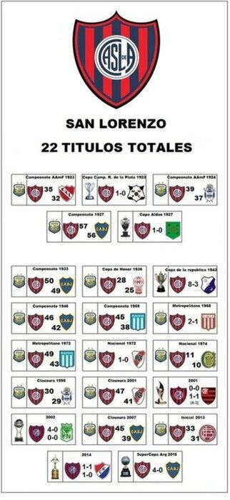

Libertadores 2014 La Copa Libertadores conquistada en el año 2014 es el mayor título internacional logrado por el club Los 22 títulos  San Lorenzo cuenta con estos 22 títulos, de los cuales 15 son ligas nacionales